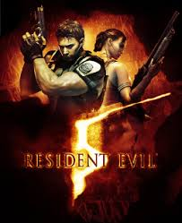
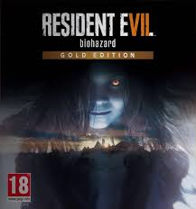

Jeux Principaux

Resident Evil
1996
L'équipe S.T.A.R.S. explore le manoir Spencer et découvre les horreurs du virus T.

Resident Evil 2
1998
Leon S. Kennedy et Claire Redfield survivent à l'épidémie qui ravage Raccoon City.

Resident Evil 3: Nemesis
1999
Jill Valentine fuit Raccoon City, traquée par Nemesis.

Resident Evil 4
2005
Leon S. Kennedy infiltre un village isolé en Europe.

Resident Evil 5
2009
Chris Redfield affronte une menace bio-terroriste en Afrique.

Resident Evil 6
2012
Une épidémie mondiale mêle action et horreur.

Resident Evil 7: Biohazard
2017
Ethan Winters explore la demeure cauchemardesque des Baker.

Resident Evil Village
2021
Ethan affronte les horreurs d'un village maudit.